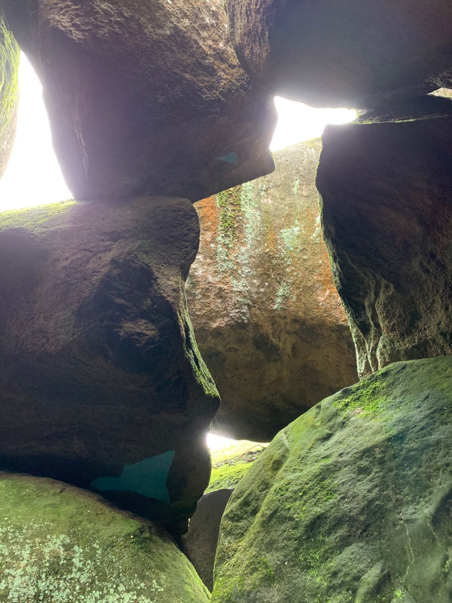
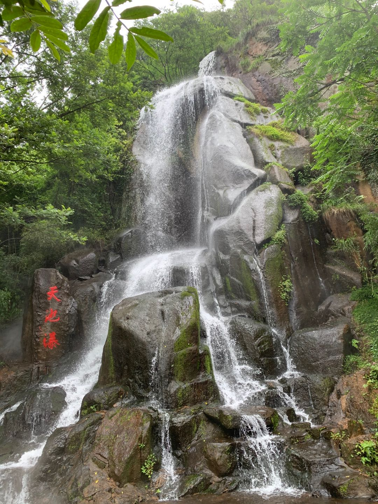
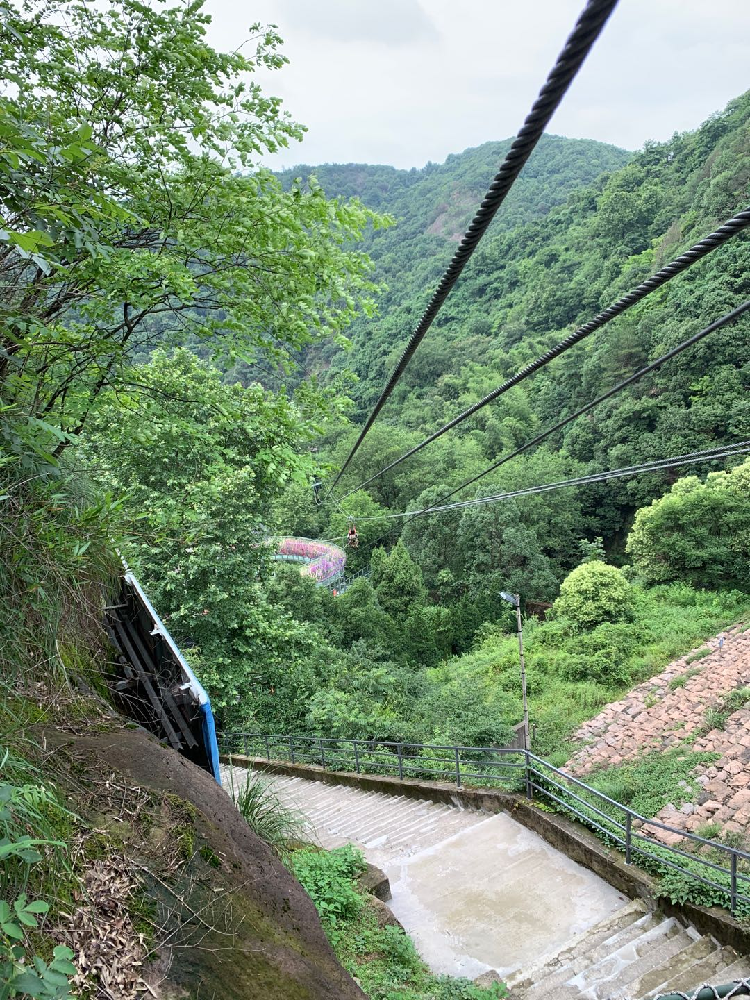
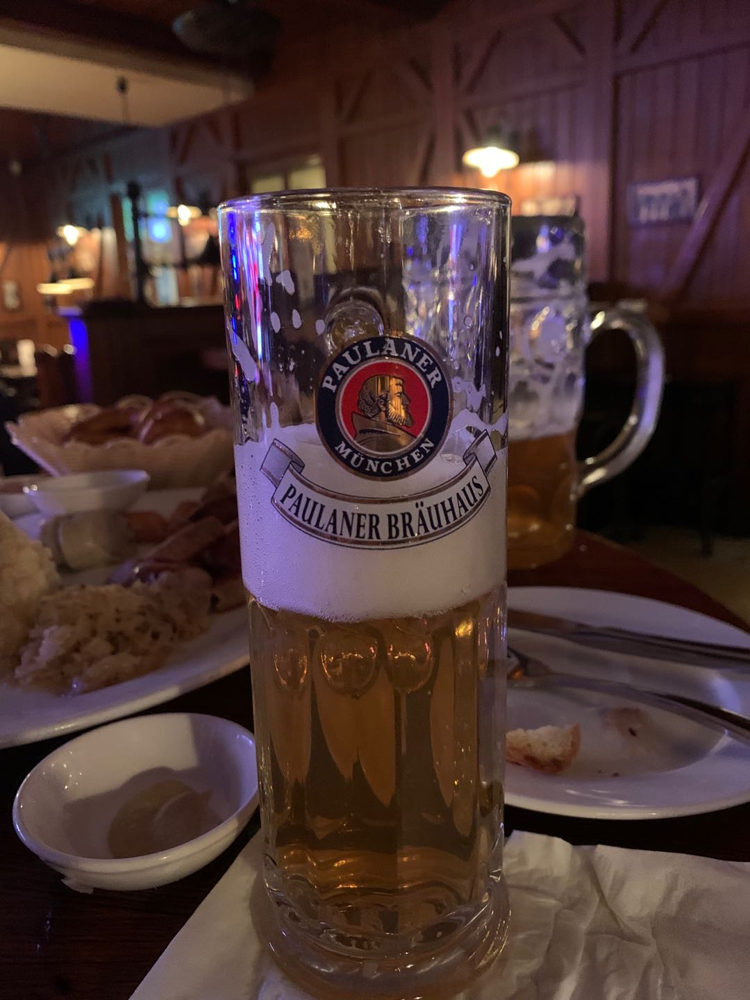

池州
时间：2020-06-06 星期六
说走就走，潇洒，璐姐好酷。
池州在哪里，我没有听说过。那就去看看吧。
早起从杭州东出发，南京转车到池州。疫情期间，旅行的人都有认真地好好保护自己。
在开往池州的火车上，读了舒国治的《流浪记》，哈，趣事我闻。刷新了我对人类天生行为的认知。
到池州后。下起毛毛雨。
打车去九华天池。
买好门票，便开始徒步上山。我们选了山间小路。
山间风拂过竹叶的声音，小鸟鸣叫的声音，溪水划过岩石的声音，交织在一起。我们用录音机收集大自然。
往前走，是崎岖的山洞，洞的入口超级矮，需要蹲下身体才可通过。第一次探险，听到了奇怪的声音，难道是飞翔的野兽；赶紧撤回。做好心理建设之后，开始第二次探险。技巧是，捂住耳朵，往前冲。
山洞里，好凉快。

再往前走，是天池瀑。山上的水流沿着石壁而下，形成自然的瀑布。

这里有，许多叔叔阿姨辈旅行团打卡。帅气的姿势。哈哈，叔叔阿姨的快乐，我们不懂。至于，山上的水从哪里来？难住了一位理科生[噗 不予置评]。
继续往山上行走，就是天池了。
我们坐船前往矮人部落。据蹭到的导游说，矮人部落是古越人的后裔。船在水面山缓缓挪动。导游讲：前面的岛，它的名字是幸福岛；为什么呢？原因是岛上有一颗幸福树，春天一个短暂的一周，幸福树会出现三种颜色。幸福岛倒是个很棒的名字。三种颜色可以调配出五彩斑斓的世界呢。
到达矮人岛之后。
去看表演。舞台中央的山大王是怎么回事。主持人开始“拍卖”书法大师的字画了。但是，观众都处事不惊，妥妥的坐在位置上。旁边的大师，看来是真大事，旁若无人地在书桌上写字。
“小精灵”们的表演开始了，跳舞、西游记、唱歌、喷火。璐姐说，只有喷火表演，值得一看。我同意她的观点。首先，作为景区的表演者，表演是工作，是安身立命的本事；既然在这里，那就一定要敬畏自己的职业，做就做好。不断的练习，拿出最好的表演给观众看。用心呈现。
看完表演之后，坐船回道来时的岸边。纠结了好一会儿，还是决定坐索道下山。（OMG我被树枝打了）

下山之后，我们的门票上，有漂流。我们跟发船的工作人员理论了半天，要，两条船。可是工作人员百般不答应。最后，我们坐了一条船。经历了两次的水位落差之后，我们的鞋被水打湿了。在一块平静的水面，我们决定，弃船而“逃”。好吧，我们真的丢下船，上岸了。在岸边走走，吹吹温暖的阳光，感觉很棒。
到达景区门口之后，一番讨论，我们决定买票回南京。
我爱南京。
我们去了先锋书店五台山总店旁边的德国餐厅。璐姐负责点菜，我负责吃。
德啤🍻太好喝了。

餐厅有乐队演出，我觉得吉他手和键盘手好棒，太厉害了。键盘手超级酷。三个主唱：复古、新歌、外语歌
餐厅可以点歌，要到11:40之后。于是，等了好久。到时间后。我点了「你离开南京后，再也没有人跟我说话」，吉他手不会弹；第二次，我点了「这个世界会好吗」，吉他手不会弹；第三次，我点了「After 17」，主唱不会唱。天啦，我太难了。南京的吉他手啊，请好好练习。
听完最后一首歌，回家。
真 · 一个轻松的周六。